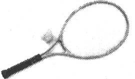

第7章 积累经验
我们应该小心翼翼地从实践中获得智慧并适可而止，否则我们就会像不慎坐在热炉子上的猫一样，它再也不会坐在热炉子上——这还好，但是它也再也不会坐在冷炉子上。
——马克，吐温
积累经验是学习和成长的关键——我们通过实践的方法学习，效果最好。
然而，仅仅依靠“实践”并不能保证成功，你必须从实践中有所收获，但是面对一些常见的障碍，我们很难做到这一点。你又无法强迫它，过度努力地尝试可能和不去尝试一样糟糕（甚至更差）。
本章中，我们将研究如何使每次实践都有意义。我们会看到如何实现以下几点。
□ 通过构造来学习，而不是通过学习来构造。
□ 更好地利用反馈，让失败也变得有意义。
□ 让大脑提前为成功构建神经网络。
也就是说，我们会探讨一下现实世界里学习的一些关键方面，然后看看如何为自己建立一个有效的学习环境。在这之后，我们会研究如何得到更好的反馈——避免像马克·吐温提到的那只以偏概全的猫（参见本章开头引言）。最后，我们会学习一种有趣的方法来切实积累经验。
7.1 为了学习而玩耍
根据大脑的结构，你需要自己探索和构建思维模型。大脑不是用来被动地存储知识的。某些时候在某些情况下大脑会这么做，但是正常情况下，并非如此：在研究事实之前，我们应该探索或者“玩耍”这些资料。
我们似乎有一种文化倾向，那就是本末倒置：首先努力地获取信息，然后希望以后再用到它。这是大多数正规教育和公司培训的基础。但是现实世界不是这样运转的。例如，假设你在上舞蹈课，结果发现在真正开始跳舞之前你必须得通过“舞蹈技能”的测试。当我这样说的时候，听起来很荒谬是吗？西蒙·派珀特（Seymour Papert）也是这样认为的。
派珀特在利用技术创建新式学习方法的领域是专家〔1〕。他发明了编程语言Logo：一种玩具语言，孩子们也可以学会，并且在玩耍中能学到深刻的数学概念。他早期有关Logo的工作最后做成了乐高头脑风暴机器人玩具，以他颇具影响力的书《头脑风暴：儿童、计算机及充满活力的创意》（Mindstorms:Children, Computers, and Powerful Ideas）［Pap93］命名。派珀特和瑞士著名心理学家让·皮亚杰（Jean Piaget）认为，真正的学习——对你有用的学习——来自实践和认知，而不是外部的教学活动或者死记硬背。他们的方法称为构造主义：我们通过构造而学习，而不是学习来构造。
他设计了Logo语言，特意为孩子们提供了学习数学概念的环境，孩子们通过操作虚拟“海龟”行走和在虚拟画布上跟踪图案来学习数学概念。年少的中小学生们就要学习几何、三角，甚至是递归算法。当遇到问题时，按照Log。的思路，他们把自己想象成行走的海龟，从海龟的角度思考移动指令。通过改变思维角度，学生们可以利用他们已知的现实世界的行走、拐弯等知识，来探索海龟的微观世界。这是很重要的一点：构建学习，这样你可以在已知经验的基础上创造。
玩耍的意义
在这里，玩耍（play）的第一个意思类似于我们之前讨论的非目的性的探索。我们不是仅仅接收信息，而是亲自探索和构建思维模型。我们需要能够指出问题，并探索这个问题或适应它（正如我们在之前的4.3节中所讲的，R型到L型的转换）。把玩一个问题并没有使问题变得容易，而是让我们看清如何了解这个问题。
在现实生活中，没有课程。
Real life has no curriculum.
当然，在这种环境下，我们会犯错误。虽然是学生，但是你却无法根据课程得到那个唯一正确的答案。因为在现实生活中，没有课程。你会犯错，会导致混乱。但是，这些混乱恰恰给了你所需要的反馈。
思维导图你玩得越多，效果就越好（参见6.8节）。通过思维导图，寻找机会来注释、修饰和绘制关系有助于你深入理解。这实际是下述观点的引申，即更积极地参与，直接把玩正待探讨的问题或者技术，不确定你会发现什么，但是想一想你可以如何扩展、联系它们。
玩耍的第二个意思引入了一种新奇的感觉，也就是乐趣。
我上周出差时，飞机乘务员对起飞前的例行乏味广播做了一点改变：整个讲话，包括法律条文部分，都使用了苏斯博士〔2〕（Dr.Seuss）风格的韵律。从安全带的正确使用，到有关损坏厕所里烟雾检测器的严肃警告〔3〕，再到氧气罩和救生装置的正确使用，都是用一种韵律十足的节奏念出来的。对于这种变化，人们会真的侧耳倾听。这是一次新鲜的演讲，非常有魅力——你会仔细去听她在说什么，猜想说话的节奏和重音在哪里。
趣味性很重要。
Fun is Ok.
因为它非常有趣，演讲变得更有效果。通常情况下，没有人会注意标准模式的讲话。每个人都在忙着阅读航空商品目录或者已经开始打盹。但是有趣的广播改变了这一切。
聪明人和蠢人
我认为大多数人都比自己所想象的更有能力。派珀特说我们倾向于把人（包括我们自己）分成两类：聪明人和蠢人。我们相信聪明人身着雪白的实验室衣服，知道所有问题的答案。蠢人则是那些高速公路上在我们前面驾车的家伙。
当然，这是一种荒唐的简化。请记住德雷福斯模型是一种基于技术的模型，不是基于人的模型。世界不是由聪明人和蠢人组成，而是包括聪明的实验室研究人员和愚蠢的司机，聪明的厨师和愚蠢的政治家……
但是暂且不论我们有哪些具体的技能缺陷，通常我们都是惊人的学习机器。想想小孩子在很短的时间内吸收了多少东西：语言、运动技能、社会交流、适时的发怒，等等。我们没有教两三岁的小宝宝单词技巧或者通过造句理解语法。相反，你只需要指着玩具说“鸭子”，小宝宝就学会了。鸭子会游泳，鸭子是黄色的。无需明确的培训或者练习，通过直觉他就能理解很多。
根据我Mac机上的字典，乐趣的定义是“好玩的行为”。
这并不意味着它很简单、没有商业价值或者无效。事实上，派珀特提到他的学生称他们的作业有趣是因为作业很难，并非无视这种困难。这是一种痛彻的乐趣：没有难得不可逾越（那就没有吸引力了），但是具有足够的挑战性来维持解决问题的兴趣，让你不断进步。
用一种好玩的方式学习新资料或者解决问题，可以让这个过程变得更让人享受，也让学习变得更容易。不要害怕乐趣。
与问题做游戏。创建闪存卡片，或者发明一种卡片、棋盘游戏，使用玩具或者乐高积木演示场景。例如，你可以创建棋盘游戏来模拟访问网站的用户。当他们降落到随机的一个角落，下一步应该去哪里？如果他们从来不点击Go或者Home会怎样？
我在第4章提到使用乐高积木做设计，原因是一样的：尽可能地把你整个人都参与到学习过程中，即语言、视觉、音乐、数字、肢体活动、手指活动，等等。这一切都帮助你真正感受那些资料并更有效地学习它。
诀窍33
为了更好地学习，请更好地玩。
实践单元
□ 面对下一个问题时，把自己融入其中。拟人法有助于利用体验。
□ 在深入事实之前探索和适应问题。在吸收正式的事实之后，反过来进行更多探索。这是一个持续循环过程。
□ 玩耍，记住并利用它的全部含义。
7.2 利用现有知识
派珀特在让学生们利用现有技能知识学习新技能时非常仔细。我们总是这样做，有时是自觉的行为，有时则不是。
把事物分成大脑足以容纳的几部分。
Try mind-size bites.
当面对一个棘手的问题时，你可以采用几种经典的方法。首先，能否把问题分成若干个更小的、更易于管理的部分？这种功能分解对软件开发人员非常实用：把事物分成大脑足以容纳的几部分。另一种流行的方法是想一想你之前解决过的类似问题。这个问题与那一个相似吗？你能使用类似的解决方案吗？还是用另一种方案解决这个新问题？
波利亚写过一本非常具有影响力的书，详细介绍了解决问题的若干经典技术，并描述了具体步骤（How to Solve It: A New Aspect of Mathematical Method ［PC85］，参见下面的概要）。
波利亚的解题方法
解决问题时，先提问自己。
□ 未知量是什么？
□ 已知量是什么？
□ 条件是什么？
然后制定一个计划，执行之，回顾结果。波利亚建议的一些技巧（如下所示）听起来非常熟悉。
□ 努力回想拥有相同或类似未知量的常见问题。
□ 画一张图。
□ 解决一个相关的或者更简单的问题，放宽限制，或者使用已知量的子集。
□ 所有已知量和条件都用上了吗？如果没有，为什么？
□ 尝试重新叙述这个问题。
□ 尝试从未知量推到已知量。
波利亚的一个关键建议是寻找以前类似的解决方案：如果你解决不了这个问题，你知道如何解决类似的问题吗？也许相似点是完全一致的（比如“这就像我上周看到的bug”），或者是一种隐喻关系（比如“数据库的工作情况就像是一滩水”）。通过类似的方式，派珀特的学生能够利用现有的、心领神会的知识（健身操、社会交往、语言，等等），以此了解乌龟的微观世界和学习新的编程技能。
但是寻找类似点也有坏处。
你学习了一门新语言，概念与你的上一门语言相关。这就是为什么多少年来我看到如此多的C++代码看起来像C，如此多的Java代码看起来像C++，如此多的Ruby代码看起来像Java，等等。这是从一套技能到下一套技能的正常过渡。
危险就在于没有完成过渡和坚持混合的方式，当你没有完全接受新技能而是处于过渡状态中时，新老方式被混杂在一起，这时就有危险。你需要学多少就得忘多少。例如，从赶马车到开汽车，从打字员到使用计算机，从过程式编程到面向对象编程，从桌面的单应用到云计算。每一种转化，新的方式从根本上与旧的不同。既然是彻底不同，你就必须放弃旧的方式。
诀窍34
从相似点中学习，从差异中忘却。
另一个危险是你对以前“相似”问题的理解可能是完全错误的。例如，当尝试学习一门函数式编程语言时，如Erlang或者Haskell，很多你之前学习的编程知识会阻碍你的学习。从所有顶用的方面来看，它们与传统的过程式语言不同。
失败潜伏在每一个角落。这是一件好事，我们马上就会看到。
7.3 正确对待实践中的失败
错误是发现的大门。
——詹姆斯·乔伊斯（James Joyce），1882—1941,
爱尔兰作家和诗人
调试是生命的一部分——不仅仅与软件有关。律师必须调试法律，机械师调试汽车，精神科医生调试我们。
但是我们不必含糊其辞，我们不是在除掉那些在我们走神时悄悄进入系统的臭虫。调试意味着解决问题，这些问题一般是我们自己制造的。我们找出过失、错误、疏忽，然后改正。价值在于从错误中学习，派珀特总结得好：“错误有益于我们，因为它们让我们思索到底发生了什么，知道什么地方错了，然后通过理解，纠正它。”
失败是成功的关键——但不是任意的失败，你需要管理好失败。你需要有良好的学习环境来帮助你，这样你可以更容易地从失败和成功中积累并应用经验。
“我不知道”是一个良好开端。
“I don't know”is a good start.
不是所有的错误都来源于你做的事情，有一些来自于你没有做但本应该做的事情。例如，你阅读时碰到了单词“rebarbative”或者“horked”，你想知道这到底是什么意思。又或者你看到一种提及的新技术，而你从没听说过，又或者提到一位你所在领域的著名作者，而你从未读过他的书。查资料，网上搜，填空。“我不知道”是一个好答案，但不要就此止步。
我们往往想到的是失败或者无知消极的一面，认为要不惜一切代价避免。但是，开头把事情做好并不重要，重要的是最后把事情做好。在任何不平凡的工作中，你都会犯错误。
探索就是在陌生的环境中“玩”。你需要自由地探索才能学习。但是，这种探索应该相对没有风险，因为你肯定不想因担心害怕而止住探索的脚步。你需要探索，即使你不知道走向何处。同样，你需要自由地创造——不介意自己的创造没有成果。最后，你需要在日常实践中应用你学到的东西。一种高效有益的学习环境应该允许你安全地做三件事情：探索、创造和应用〔4〕。
诀窍35
在你的环境中安全地探索、创造和应用。
建立探索环境
但是，你必须为你自己、你的团队、你的公司建立一个安全的实践环境才可以去探索、创造和应用想法。你不会希望你的心脏手术医生动手之前说：“我今天准备尝试用左手开刀，看看效果如何。”
这不安全，一名活生生的不知情的病人不适合做实验。
你可以在公司范围之外尝试，比如在家里做开源项目。这起码会减少产生负面结果的风险。但是仅仅这样不足以为你建立一个积极的学习环境。不论是在公司团队还是在黑夜里偷偷进行的独自实验，你都需要做到以下几点。
自由实验
很少有问题只存在唯一的最佳答案。你既可以用这种又可以用那种方式实现下一个功能，你会如何选择？都要！如果时间太紧张（什么时候不紧张？），至少每种方法要尝试做一个原型。这就是实验，你需要努力去做。在评估时间时，把它看作是“设计阶段”的一部分。你也需要确保这个实验不会对团队中的其他人造成不良影响。
能够原路返回稳定状态
安全性意味着，当实验出现问题时，你可以重新回到做出这些可怕改变以前的太平状态。你需要恢复到源代码之前的已知状态，然后再重新尝试。请记住，你必须回到上次正确的状态。
重现任意时刻的工作产品
回溯到源代码的前一个版本是远远不够的，你可能需要真正做到运行任意版本的程序（或相关工作产品）。你能运行这个程序去年或者上一个月的版本吗？
能够证实进展
最终，如果没有反馈，你一无所获。这项实验或者那项发明果真比其他的更有效吗？你如何知道的？项目在进步吗？这周实现的功能比上周多吗？你需要证实细粒度的进展——对你自己也对别人。
在软件开发领域，很容易搭建一个满足这些需求的基础设施。这就是我们所说的启动工具包（Starter Kit）：版本控制、单元测试和项目自动化〔5〕。
□ 版本控制工具存储了你工作的所有文件的所有版本。不论你在写代码、文章、歌曲还是诗词，版本控制工具就像一个巨大的回退（Undo）按钮〔6〕。新发布的版本控制系统Git或者Mercurial都非常适合个人实验。
□ 单元测试提供了一套细粒度的回归测试。你可以使用单元测试结果来比较不同的方案，把它们看做进展的重要指标〔7〕。不论做什么，我们都需要客观的反馈来衡量进展。这是我们的工作。
□ 自动化把一切联系在一起，确保那些琐碎的机能都以一种可靠、可重复的方式运行〔8〕。
Starter Kit帮助你自由实验，风险相对较小。
当然，你的团队实践和文化必须允许这种探索和创造的方法。对任何人而言，支持的环境既可能创造也可能毁灭学习。一行禅师提醒我们关注基本归因错误（参见第5章，调试你的大脑），环境往往比个人因素更重要。
当你种菜时，如果长得不好，你不会责怪菜。你会寻找其他理由。菜可能需要更多的肥料或者水，或者少晒太阳。你绝不会怪罪菜。
——一行禅师
实践单元
□ 如果你的软件项目还没有安全搭建（版本控制、单元测试和自动化），那么你需要马上做好。放下书。我会等你回来。
□ 你的个人学习项目需要同样的安全环境——不论是写代码、学习画画还是探索溶洞。准备好必备设施，培养出好习惯，让你的项目安全地探索。
□ 你知道halcyon的意思吗？Anthropomorphism呢？听说过一行禅师吗？你查找过他们吗？如果没有，你不想简单地尝试一下吗？（在Mac机上，你可以经常Control-click或者right-click一个单词，然后查找字典或者使用Google，非常方便。）
7.4 了解内在诀窍
失败分两种。有一种失败对我们有益，可以从中学到东西。但是另一种对我们无益。第二种失败没有产生任何知识：它要么一开始就阻止我们学习，要么中途毁了我们的学习。
为了识别和克服第二种失败，你需要了解内在诀窍（inner game）。理解诀窍将帮助你消除学习中的干扰，它强调了正确的反馈有利于学习。
在1974年，畅销书《网球的内在决窍》（The Inner Game of Tennis）［Gal97］为一代人介绍了一种全新层次的反馈和自我意识。它催生了很多后续书籍，包括《音乐的内在决窍》（The Inner Game of Music）［GG86］和有关滑雪、高尔夫等主题的书。
内在诀窍系列书籍帮助推广了从自身实践中学习的理念。提摩西·葛维（Timothy Gallwey）和其他作者区分了明显的外在技巧，探索了更重要的内在诀窍的细节。改进学习方法的很多内容来源于葛维有关减少失败诱因干扰和利用反馈的理念。
在那本书里有一个著名的例子，说有这样一位五十岁左右的女士，过去二十年从未打过网球，也未进行过任何剧烈的体育运动。你面临的挑战是如何在二十分钟内教会她打网球。如果使用传统的方法肯定不可能成功。但是葛维有一个好主意，不需要长篇的讲座和不断的示范。

首先，女士在旁边看葛维击球，并大声地喊“弹起”和“击球”。大约一分钟后，轮到她上场了，但她只是说“弹起”和“击球”，不去击球，而是在合适的时刻喊出相应的动作，并挥臂模仿。接下来是倾听球触及球拍的声音。如果你从未玩过，会感觉球准确击中球拍的位置时发出悦耳、清晰的声音。葛维只是告诉这位女士要仔细听，并没有明确地说出这些感觉。
下一步，该练习发球了。首先，她只是在观看葛维发球的时候哼出一个词组以获得动作的节奏。不要描述动作，只是看和哼。接下来，她尝试自己发球，同样是哼着词语，只关注节奏，而不是动作。这样过了二十分钟之后，该打球了。她得到了比赛的第一分，截击动作非常地规范〔9〕。
在另一个例子中，你在院子里击球，一把椅子摆在中间。这不是为了练习击中椅子，仅仅是注意球的落点与椅子的关系。因此在击球时，你会将观察到的现象喊出来，例如“左”、“右”、“高了”，等等。
通过探索可以学得更好，而不是指令。
We learn best by discovery, not instruction.
内在诀窍系列书籍告诉我们，通过说教很难传授技能，我们通过探索可以学得更好，而不是指令。这种理念体现在椅子的例子中，学习者可以实时得到情境的反馈。
培养情境反馈
情景反馈是一种主要的内在诀窍技术，让你消除干扰，学习更有效率。在网球的例子中，老师没有教授学习者太多的运动规则，如手势、步伐等，也没有强迫她学习理论课程，而是让学习者关注于非常简单的反馈循环。这样击球，球落在这里，那样击球，球落在那里。跟着节奏。对于非语言的技能来说，这是非语言的学习，反馈循环很紧凑，反馈间隔〔10〕也很短。
看看一个滑雪的例子。多年来我参加过很多滑雪课程，它们都是千篇一律。我曾经在一位好像叫汉斯的教练的指导下滑雪，他发号施令的语速总是很快，说话还带口音。
□ 夹紧手臂！
□ 屈膝！
□ 脚尖并拢！
□ 向弧线内倾斜！
□ 留神你的滑雪杆！
□ 当心前面的树！
我努力倾听这个家伙说的一切，但显然语言处理中心（L型）此时运行缓慢。我还在努力夹紧手臂，又开始思考膝盖，可眼看着树已经马上要撞上了。在此刻，大脑只是在接二连三地油炸大量的指令，停止了运转。大脑僵住了。指令太多了以至于难以同时记住和维护。
内在诀窍理论提供了解决方法：避免向学生传授一长串指令，而是教学生一种意识，并使用这种意识来纠正学习表现。意识是一种超越新手层次的重要工具。
例如，在《音乐的内在诀窍》［GG86］一书中，作者提到了一个教贝司手的故事。
作者曾经用类似那位滑雪教练的方式教学：手臂保持这种姿势，头这样歪，身体这样倾斜，现在放心弹吧。当然，可怜的学生看起来像是僵硬的饼干。
知道即可。
Just be aware.
因此，这位音乐老师又尝试了其他办法。他让学生按自然状态演奏，但是引导他认真观察自己演奏的每一个方面——感觉如何，姿势如何，哪些乐章困难，等等。然后，无需解释，他纠正了学生的姿势和指法，并手把手指导了几个小节。指令是一样的：观察所有方面，现在感觉如何？开始演奏吧。每到这时，他的学生在这种意识练习之后都会表现出极大的进步。
这是运用内在诀窍的关键要素：不要把精力放在纠正一个一个的细节上，只需要具有意识。接受事实是第一步，只要意识到它即可。不要做出判断，不要急于拿出方案，不要指责。
你需要尝试培养非判断性的意识：不要想着来纠正，但是在出错时要知道，然后再采取行动纠正。
诀窍36
观察，不做判断，然后行动。
不仅仅是网球
现在你可能已经注意到这些例子大多数是在运动领域——涉及肌肉记忆和身体技能。但是，远不止于此。例如，核磁共振成像表明演奏音乐可以激活大脑中几乎所有的部位〔11〕。从演奏乐器到阅读音符、倾听音乐、遵循和弦进程的抽象原则，等等，L型和R型都处于活跃状态，并一同配合着较低级别的肌肉记忆。因此，尽管我们讨论的是滑雪和演奏贝司，但其经验教训也可以应用于软件开发和其他领域。
不要动手做，而是要袖手旁观。
Don't just do something;stand there.
例如，在采取纠正行动之前完全知道“这是什么”对于调试非常重要。太多程序员（包括我自己）往往在没有完全明白真正的错误是什么之前就着急修正它。匆忙地作出判断或者过早地进行修补。你需要首先完全明白系统的原理，然后再判断哪部分错了，最后提供解决方案。也就说，不要动手做，而是要袖手旁观。琼·金姆介绍下述方法来帮助大家充分了解。
假设你在做测试优先的设计（test-first design）。你添加了一个新的测试和应该通过此测试的代码。你认为代码没问题，点击了运行按钮。结果呢？测试失败，而这是你始料不及的。你的心跳开始加速，视野变窄，肾上腺激素增加。深呼吸，手离开键盘。仔细阅读错误信息。提高你的意识。这是怎么回事？
现在闭上眼睛，想象一下错误代码的位置。把它看做地震震中。你可能感觉地面到处抖动，但震中最明显。出错代码应该是什么样的？周围的代码呢？睁开眼睛之前想象一下错误代码和周围代码。
一旦能够想象出错误代码，再睁开眼睛，找到代码位置。如你所愿吗？的确是错误所在吗？
现在重新闭上眼睛，想象一个可通过的测试。当你能够想到测试代码时，睁开眼睛，写下来。检验一下是否和你想的一样。在你点击测试按钮之前，问问自己，结果会是什么？然后点击按钮，看看结果。
这可能是一个普通的练习，但确实起作用。下次陷入思维混乱的时候可以尝试一下。主旨就是要提高你的认识，明确地比较你想象版本的代码和真实可行的代码。
不仅仅是调试，收集需求也是一样的——特别是有现存系统参与时。杰拉尔德·温伯格认为，当你与客户交谈时，大多数客户都会在五分钟内告诉你他们最严重的问题和解决方案〔12〕。倾听客户的心声非常重要，不要把你的注意力放在苦苦追求酷的方案上。你可以随后再展开思维风暴，但是首先要充分了解。
内在诀窍的理念关注反馈，以此增长专业知识。培养，然后倾听经验的内在声音。只有运用倾听才会起作用。倾听、倾听、倾听。遗憾的是，这并不总是那么容易，正如我们马上要看到的。
7.5 压力扼杀认知
内在诀窍系列书籍的中心思想用一句话就可以总结：“尝试会失败，认知会弥补。”也就是说，有意识的尝试通常都不会像简单认知那般有效。事实上，过度努力追求会导致失败。
仅仅是最后期限的到来就会造成心理恐慌而导致失败。例如，这里有一个针对神学院学生的著名心理研究〔13〕。
最后期限会使大脑恐慌。
Deadlines panic the mind.
该实验选取了一组当天学习“善良的撒玛利亚人”课程的学生。在接受了做个好人、帮助服务同胞的熏陶之后，研究人员设置了一场意外邂逅。他们选择了一组学生，告诉他们下课后马上与校长开一个非常重要的会。地点在校园另一边，不能迟到——关乎学生的未来职业发展。然后，研究人员安排了一名实验协助者，打扮成一个无家可归的乞讨者，就挡在学生去校长办公室的路上。
可悲的事实是，这些虔诚的学生，在重要会议的压力下，差不多是从这位乞讨者的头上跑了过去，疯狂地冲向会议地点。另一组学生也被告知有重要会议，只是他们有比较多的空余时间——他们并不着急。第二组学生停下来帮助乞讨者，把他带到医务室，清理卫生，等等。
压力宿醉
你也许不同意对于压力的这种认识。你可能认为自己在面对最后期限时表现得非常有效率。特丽萨·阿马贝尔（Teresa Amabile）博士的研究表明，虽然这对L型活动可能有一定道理（但我高度怀疑这一点），但是对于创造力和R型活动却是一种灾难*。
阿马贝尔和同事对工作中的创造力进行了长达十年的研究，其间，他们发现：当面对时间压力时，人最没有创造力。这与人们的普遍认识恰恰相反。
事实甚至比上述研究结果还要糟糕。不仅面对时间压力时缺少创造力，而且这种压力还有一种后期影响：时间压力“宿醉”。你的创造力一直受到压制，持续到之后两天的时间。
这就是为什么要在周五结束一个项目迭代，也是为什么在经过时间混乱、惊慌失措的危急时刻之后需要一个整顿时间。
请安排恢复时间以应对你的时间压力宿醉。
当大脑受到压力，它会主动停止一些思考，眼界会缩小，不再考虑可能的选择。更糟糕的是，你把R型完全拒之门外：L型主导一切。当你认为时间至关重要时，R型根本没有机会工作。
你的搜索引擎、创造力和聪明才智也是这样。正如我们之前提到的滑雪教练或者贝司老师，由于他们释放了一连串的口头指令，你的思维也会被冻结。R型同样被拒之门外了。
几年前，我有过一次类似的有趣经历。那时，我们几个人参加了一次温伯格组织的研讨会〔14〕。其中一个练习模拟了制造行业。大约十到十二个人被分成工人、经理、客户等角色，会议室的桌子变成了工厂，索引卡代表产品、订单等。当然，遵循所有优秀模拟的惯例，这里设置了个小陷阱。按照普通手段难以满足生产需求。因此，压力开始出现，管理者开始做出糟糕的决定，随后是更糟的决定，接下来是灾难性的决定。工人们开始搞不清楚为什么他们老板的决定如此荒唐。
幸运的是，此时模拟结束了。考克伯恩（Alistair Cockburn）也参与了这次会议，他形象地描述了我们大家共同的感受：大脑在恢复思考时有一种刺痛感，就像思维刚才都已经睡着了，类似于胳膊或者手被蜷在一个非常不舒服的位置，再动的时候会疼。
面对压力时，我们需要放松。
允许失败
我曾说过错误对成功很重要。从内在诀窍系列书籍学到的另一个重要经验是，允许失败会促进成功。你无需主动犯错误，只是一旦犯了，那也没什么。这听起来有点违反直觉，但是一旦你实践这种想法，就非常有意义。
诀窍37
允许失败，你会走向成功。
例如，那位贝司老师讲述了一个普遍问题。很多优秀的学生在聚光灯下就会僵住，不能高水平地演出。因此，他耍了个花招。他把学生带到舞台上无情的聚光灯之下，但是宣称评委还没有准备好。他们依然在准备最后一个候选人的资料。甚至麦克风也没有打开。那么演奏一下吧，算是热热身。
当然，老师在撒谎。
事实上，评委在仔细倾听。结果这些学生们不负所望，演奏得非常精彩。他们非常放松，因为被允许失败。不论是认知学还是神经学方面的原因，一旦你被允许失败，你就不会失败。可能，这也有助你关闭过度活跃的L型思维。
没有了压力之后，你就可以集中注意力，非常放松地观察——记住第一宗旨：认知胜过尝试。在众人强烈的关注下，我们难以观察和表现出色；在最后期限的压力下，我们也难以让思想开花结果。那种迅速击毙想法的“头脑风暴”会议也有类似的破坏性影响。
建立“允许失败”的地带。
Create“failure permitted”zones.
相反，在平常的软件项目中非常有可能建立“允许失败”的地带。关键是要建立一种失败代价接近零的环境。在头脑风暴会上，所有想法都写在白板上（或者其他什么地方）。如果某个想法没有进一步的动作也不会有什么成本。想一想单元测试的敏捷实践。这里，你可以自由地允许单元测试失败——甚至是鼓励失败。你从中有所收获，修改代码，继续前进。
原型也给了你类似的自由。也许它有用，也许没用。如果没用，你可以学到教训，应用到实践中，在下一个迭代中使用。
另一方面，如果失败是有代价的，就不会允许实验。没有风险，也没有收获，只有僵硬的思维，就像冲到汽车前面的鹿，等待着一场不可避免的、血腥的事故。
但是如果现实环境真的很危险怎么办？这没关系，你需要一个允许失败的环境。但是如果你练习跳伞怎么办？或者滑雪？如何才能提高在这种富有挑战性环境下的成功机会？
7.6 想象超越感观
内在诀窍（inner game）的名字意味着真的可以在内部玩。除了现实世界之外，你也可以从大脑中取得经验。
假设你坐在电影院里，正观看汽车追逐的高潮部分。你的脉搏加快，呼吸急促，肌肉紧张。
但是等一下，你并没有真正置身于追逐中。其实你正坐在舒适的软席椅上，享受着空调，喝着饮料，吃着爆米花，看着投射到荧幕上的画面。你根本没有危险〔15〕。
然而，你的身体反应就像你正处于危险境地一样。事实上，这样的反应不必非是在看电影时才有，看书时也会有。甚至不需要是发生在当前时刻的事情。你还记得小学时欺负人的坏蛋或者可怕的老师吗？初恋呢？这些只是记忆，但是想起它们也会导致相应的身体反应。事实证明，大脑不是很擅长分辨输入源。实时的感知数据、过去事情的记忆，甚至是从没发生过的单纯想象都会引起相同的生理反应（见图7-1）。
图7-1 所有输入都是等价的
娱乐业就是依靠这一点。
事实上，情况有点糟糕——对事件的记忆或者想象经常不顾更加准确的实时感知数据。这使得目击者的报告存在一些问题：你认为你看到了，其实你没有看到。
鸡蛋是白色的，是吗？
贝蒂·爱德华在色感一致性现象中描述了类似的例子。大脑的某部分会覆盖来自视网膜的颜色信息。就像我们之前提到的简化的木棍图表示法，你“知道”天空是蓝的，云是白的，金发是黄色的，树是绿的——就像一组彩色蜡笔。
爱德华介绍了美术老师对一组学生做的一个有趣测试。老师搭建了一组静物，包括白色的泡沫塑料几何物体（立方体、圆柱和球体）和一纸箱常见的白壳鸡蛋。他补充说，彩色的泛光灯使静物中的一切略添桃红色，然后让学生开始画画。
据爱德华的描述，所有的学生都把白色的泡沫塑料物体画成桃红的底色，就像它们出现在彩色灯下一样。
但是，鸡蛋不是。
学生把鸡蛋画成了白色。“鸡蛋是白色”的持续记忆覆盖了他们在彩色光下的真实颜色。更值得一提的是，当老师指出鸡蛋是粉色的时候时，学生也视而不见，他们坚持说：“鸡蛋是白色的。”
很多感知是基于预测的〔16〕，预测则基于情境和过去的经验，以至于当前的、实时的输入被抛在了后面。你是否有过一位朋友突然在外形上做了很大改变？他们留了或者剃了胡须，或者改变了发型或染了色，而你没有立刻意识到？甚至是过了一段时间也没意识到？
看法是基于预测的。
Perception is based on prediction.
一个经典的例子是，妻子换了新发型，丈夫根本没有注意到——丈夫所“看到”的内容基于过去的信息。这就是大脑的工作方式〔17〕。
既然这一现象通常基于记忆的经验和想象的经验，你就可以好好利用它，让它为你服务。
利用大脑模拟成功
本节你需要耐心听我讲，因为内容听起来像巫术一样，非常让人怀疑。但是，既然大脑有点容易受到输入源的欺骗，那么想象自己成功被证明是一种达到成功的有效方法。
你可以提高你的表现——不论是演奏小提琴、调试代码还是设计新的架构——通过想象你已经成功地做到了这些。
首先，让我们看一些实际例子。你可能已经注意到，如果你参加一个会议或者聚会，周围全是更高技能的人，那么你的能力就会提升。也许你可以更清楚地表达或者更好地证明自己的观点。或者你甚至有了自己的观点。
传奇爵士乐吉他手派特·麦席尼（Pat Metheny）让这个想法更进了一步，他建议：“让自己始终成为乐队的最差乐手。如果你是最好的，你需要换一个乐队。我认为这对几乎所有事情都奏效。”〔18〕
也就是说，如果你的周围全是高技能的人，你就会增长自己的技能水平。一部分原因是来自于对他们实践和方法的观察和运用，还有一部分是来自于对自己大脑的调节，使其在更高水平上工作。你有一个被称为镜像神经元的天然机制来帮助你：观察别人的行为，激励你也做同样的行为。
我们是天生的模仿者。
We are natural mimics.
内在诀窍书籍的作者们建议你把自己想象成专家。他们注意到，仅仅告诉学生去“模仿”所在领域的名人就足够提高他们的水平了，毕竟我们是天生的模仿者。你已经听过迈尔斯·戴维斯（Miles Davis）的音乐，读过李纳斯·托沃兹（Linus Torvalds）的代码，看过《程序员修炼之道》〔19〕。
你可以在大脑中想象编写代码或者假装交流需求。你可以“演奏”乐器，即使乐器不在你面前——你可以想象自己握着它，非常好。
本着类似的想法，奥运会运动员也做这种离线实践。他们会想象自己飞驰在跑道上，拐弯，适当地做出反应。通过持续做这种事情，大脑会形成惯例（gets grooved）〔20〕。它习惯了正确地做这件事情，因此当真正来到赛场时，成功就顺其自然了。
诀窍38
让大脑为成功形成惯例。
习惯“成功”的感觉非常重要，值得先假冒一次。也就说，你需要人为地创造条件感受一下，为了体验一下这种近似的成功感，不论需要何种脚手架，你都应配置。
游泳者的体验方法是：在身上绑一根绳子，被拖着在水中快速前进〔21〕。游泳者在凭借自己的能力达到这个速度之前，可以体验一下感觉。这不仅仅是一种慷慨的好意，在这次体验之后，游泳者的表现会显著提高。
体验使要脚手架。
Experience using scaffolding.
你可以尝试另外的方法。如果愿意，你可以使用负面脚手架，或者说不用脚手架。也就是人为加大客观条件的难度。然后当你真正尝试时，它就会显得很简单。跑步者可以在脚上绑上重物或者跑过齐腰深的积雪。Ruby程序员可以用C++做一段开发。C++类似于把脚踝上绑上重物，在此之后，动态语言就显得非常容易了。
你可以想象实践并从中学习，如同真实体验一样有效。大脑不知道其中的差别。因此，放下压力，弄清楚哪里出错，假装你已经修正了它。
然后，你就真的会改正它。
实践单元
□ 下一次面对困难局面时，请记住：“尝试会失败，认知会弥补。”停下来，首先完全弄明白问题在哪里。
□ 为失败做计划。要知道，如果犯了错误，也没关系。看看这是不是有助于减轻压力和提高表现。
□ 成为专家。不要只是假装，要真正地扮演专家的角色。注意这么做会如何改变你的行为。
□ 考虑你需要哪类脚手架来体验专家经验，看看你能否安排好。
7.7 像专家一样学习
现在你应该感觉自己可以更好地控制自己的学习体验了。
在本章中，我们研究了玩耍促进学习的意义和实践中允许失败的重要性。我们从内在诀窍系列中学到了经验，了解了怎样对大脑施加一些骗术，不论是好的还是坏的。
不要忘记，随着经验的积累，你会在德雷福斯模型中的不同阶段不断前进。你不断积累的经验会逐步改变你的观点，你会发现自己从新知识的角度重新诠释过去的经验，并且增强了思维模型。
正如我在5.1节提到的，记忆的每一次读取都是一种写入。记忆不是固若金汤的，逐步增长的专业知识会渐渐添加到你要使用的过滤器和匹配模型中。
直觉就是这样增长的：你有越来越多的模型来借鉴和应用，也有越来越多只可意会的知识来帮你确定要搜索什么，以及何时搜索。换句话说，你开始感受到专家行为的初级阶段。
但是首先，剪掉绿线
似乎每当电影里出现拆除炸弹的情节时，主人公首先接受的指令都是拔出零件，坚决按照指定顺序切断电线。然后拆弹小组会纠正说：“噢，动手之前请先剪断绿线。”但为时已晚，预示悲惨结局的滴答声越来越强。因此，下一章，我们将研究“绿线”，了解你应该首先做的事情。
我猜你可能已迫不及待想立即尝试本书提到的所有知识。
但是现实生活中每天的工作难以逾越——所有的电子邮件、会议、设计问题和bug。在很短的时间内有太多的事情要做。所有伟大的想法都在每天各种紧急事情的无情碾压下逐渐消融。
下一章，我们将探讨几种方法来管理大量的信息，并更好地控制值得你关注的事情。
注 释
〔1〕 派珀特和马文·明斯基（Marvin Minsky）创立了MIT人工智能实验室，他同时也是MIT媒体实验室的创始人之一。
〔2〕 美国最受欢迎的儿童文学家和插画家。
〔3〕 这让我想到一个问题，除了烟雾检测器之外，损坏飞机的任何部分不都应该受到严厉的惩罚吗？我离题了……
〔4〕 参见Explore, Invent, and Apply［Bei91］。
〔5〕 事实上，戴维·托马斯（Dave Thomas）和我都认为Starter Kit的思想非常重要，因此在Pragmatic Bookshelf系列书中首先介绍了这些知识。
〔6〕 参见Pragmatic Version Control Using Git［Swi08］、Pragmatic Version Control Using Subversion ［Mas06］或者Pragmatic Version Control Using CVS［TH03］。
〔7〕 参见Pragmatic Unit Testing In Java with JUnit［HT03］和Pragmatic Unit Testing In C# with NUnit （第二版）［HwMH06］。
〔8〕 参见Pragmatic Project Automation、How to Build, Deploy, and Monitor Java Applications［Cla04］和Ship It! A Practical Guide to Successful Software Projects［RG05］。
〔9〕 参见Alan Kay所做的名为Doing with Images Makes Symbols: Communicating with Computers 的视频讲座。
〔10〕 反馈间隔指执行动作和收到反馈之间的时间段。
〔11〕 参见This Is Your Brain on Music: The Science of a Human Obsession［Lev06］。
〔12〕 参见《咨询的奥秘》（The Secrets of Consulting）［Wei85］。
〔13〕 参见《从耶路撒冷到耶利哥：帮助行为的情境和特质变数的研究》（From Jerusalem to Jericho:A Study of Situational and Dispositional Variables in Helping Behavior）［DB73］。
〔14〕 参见《成为技术领导者》（Becoming a Technical Leader: An Organic Problem-Solving Approach）［Wei86］和http://www.geraldmweinberg.com。
〔15〕 除了橙汁流到地板上造成生物危害之外。
〔16〕 这是《人工智能的未来》（On Intelligence）［Haw04］一书中的主要发现。
〔17〕 当然这不能作为犯错的理由。
〔18〕 感谢Chris Morris和Chad Fowler，见My Job Went to India: 52 Ways to Save Your Job［Fow05］。
〔19〕 如果你还没有读过，赶快跑（不是走）到书店买一本。我说真的。
〔20〕 爱德华·德博诺（Edward de Bono）的术语。
〔21〕 感谢琼·金姆提供的示例。
* 引自The 6 Myths of Creativity［Bre97］，感谢琼·金姆提供线索。